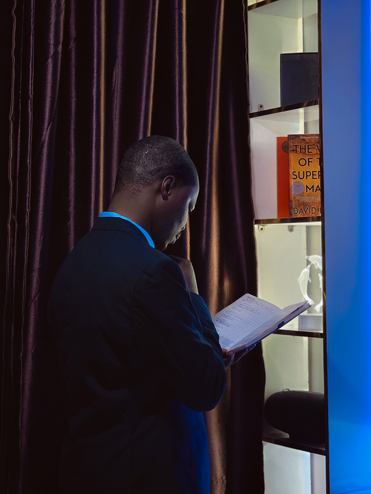

HomeAbout
About
About us
Stories told through the lens
At dA_gr8t Shot, we believe every photograph tells a story and every moment deserves to be remembered. We are passionate about capturing life's beautiful moments, genuine emotions, and little details that make every experience special.
With creativity, attention to detail, and a personal approach, we create photographs that reflect your story and preserve the memories that matter most.
Whether it's a wedding, a birthday, a portrait session, a family gathering, or a special milestone, we are here to turn fleeting moments into lasting memories.
See our work
Our approach
What Guides Our Work
The same few things shape every session, whether it's a quiet portrait or a full day of celebration.
-
Creativity
Every shoot is a chance to try something fresh, while keeping your story at the centre of every frame.
-
Attention to detail
From the light on a face to the little moments between the big ones, we notice what makes each occasion special.
-
A personal approach
We take the time to understand your vision, so every frame reflects your personality, your story, and what matters most to you.
-
Comfort and trust
We want every client to feel comfortable, confident, and valued, in front of the camera and long after the session ends.
How we work
From First Idea to Finished Story
A simple process, so you always know what comes next.
-
Tell us your idea
Share the occasion, your vision, and any ideas or references you love.
-
We plan together
We talk through the look, location, and timing, so the day runs smoothly.
-
The shoot
Relaxed direction and an eye for the moments in between, so you can simply enjoy it.
-
Your finished story
We edit with care and deliver your photographs or films, ready to share and keep.
Let's work together
Ready to Tell Your Story?
Tell us about your occasion, and we'll help plan the photographs or film that bring it to life.
Book Your Session